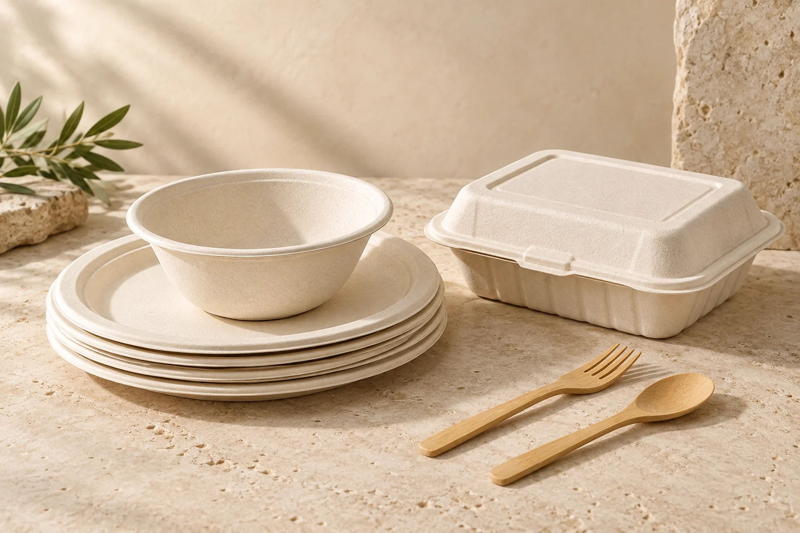

Fresh Produce
Fresh Onions
Red, yellow and white onions, carefully sorted and packed for your supply chain.
Explore product Fresh Onions
PRODUCT COLLECTION / TC EXIMSustainable Packaging
Thoughtful materials. Everyday practicality.
Build your food-service range with disposables made from plant-derived materials. Explore bagasse and starch-based options across plates, bowls, food trays, containers and cutlery. Each item is selected against its intended use, with material, dimensions and performance requirements confirmed at quotation.
MOQ, price and lead time are quoted for your requirements.
KNOW YOUR PRODUCT
| Product range | Plates, bowls, trays, clamshell containers and cutlery |
|---|---|
| Material options | Bagasse and starch-based materials; varies by item |
| Sizes | Dimensions and compartment options on request |
| Temperature suitability | Confirmed for each item and intended use |
| Food contact | Supporting documentation reviewed for the destination |
| Compostability | Item-specific test evidence and disposal conditions to be confirmed |
LET’S BUILD YOUR NEXT SHIPMENT
Tell us what you need, where it’s going and how you’d like it packed. We’ll take it from there.
Request a bulk quote